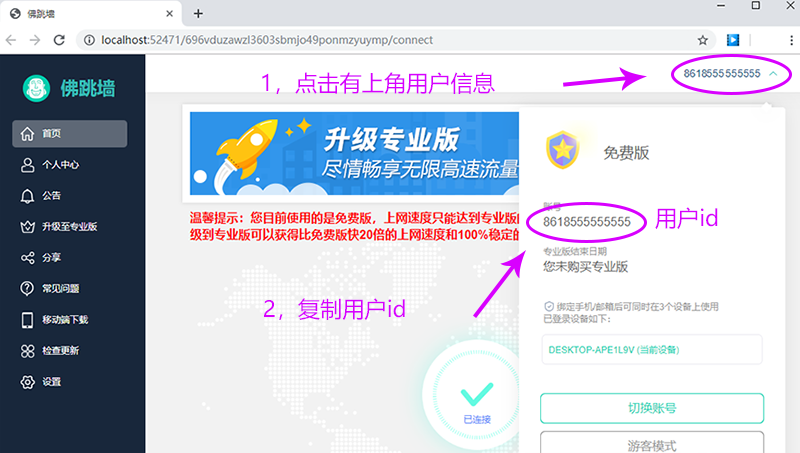
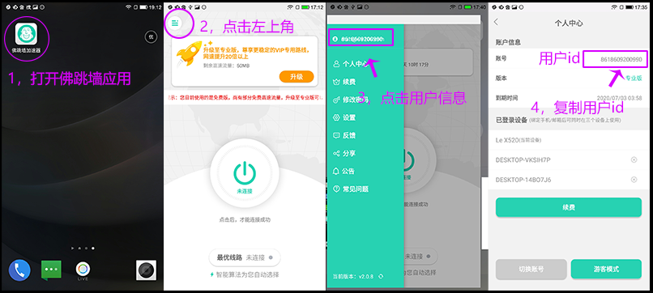
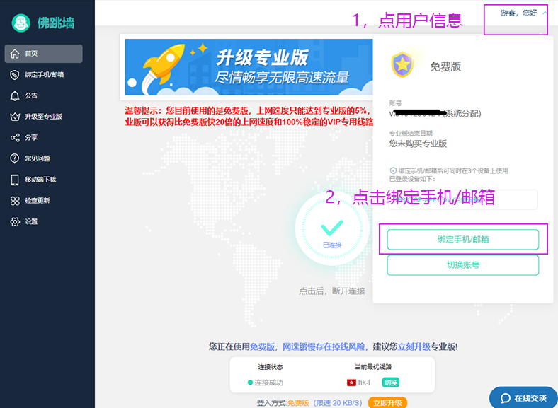
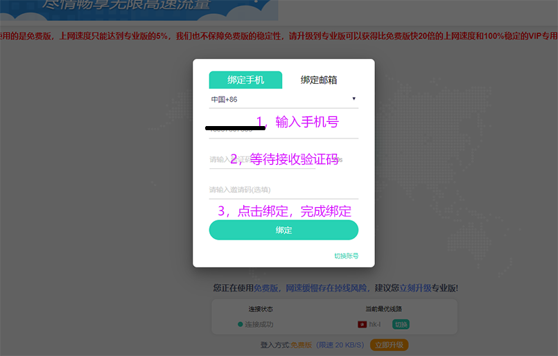
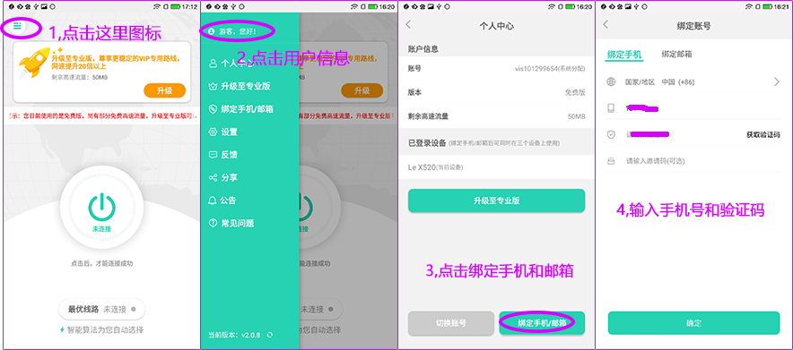

| 佛跳墙用户ID查看和手机绑定教程 |
PC端查看用户ID |
| 1、在桌面双击打开佛跳墙应用 |
| 2、点击“个人用户信息”“复制用户id”,如下图 |
|  |
移动端查看用户id |
| 1、如下图，按照1.2.3.4步骤即可复制用户id |
|  |
PC端绑定手机 |
| 1、在桌面双击打开佛跳墙应用 |
| 2、点击“个人用户信息”和“绑定手机”如下图 |
|  |
| 3、绑定手机，输入手机号和验证码，如下图 |
|  |
| 4、信息输入完，点击绑定按钮，完成绑定 |
移动端绑定手机 |
| 5，按照下图1.2.3.4绑定手机，如下图 |
|  |
| 谢谢观看 |